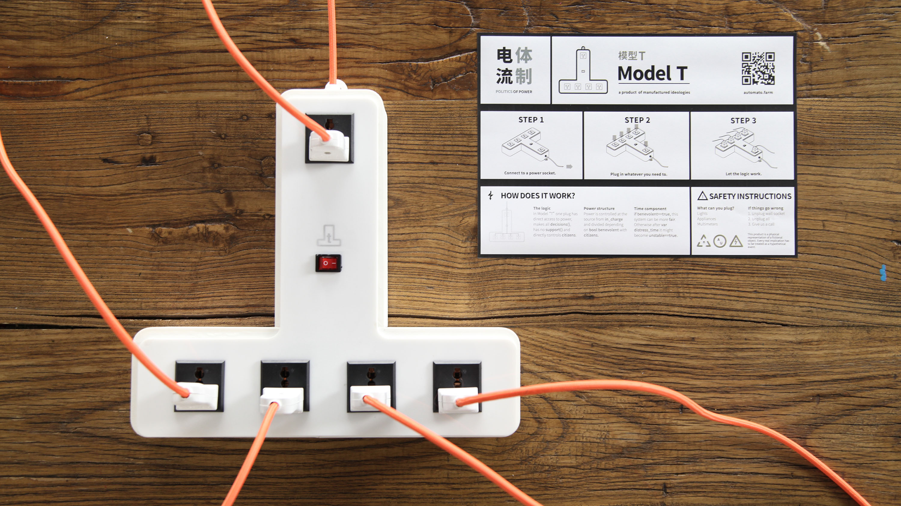

2017
Transparently biased mundane products.
Power strips don't have opinions — or do they? Politics of Power embeds ideological bias into the most mundane of domestic objects.
Each plug socket in the strip is governed by a different political philosophy. Whether your device gets power depends on which socket it's plugged into — and the political system that controls it. Some sockets are egalitarian, distributing power equally. Others favour the first, the last, or the most recently active device. One charges devices based on how much they've already charged.
The project makes visible the hidden politics of everyday systems — the assumptions baked into objects we never question.